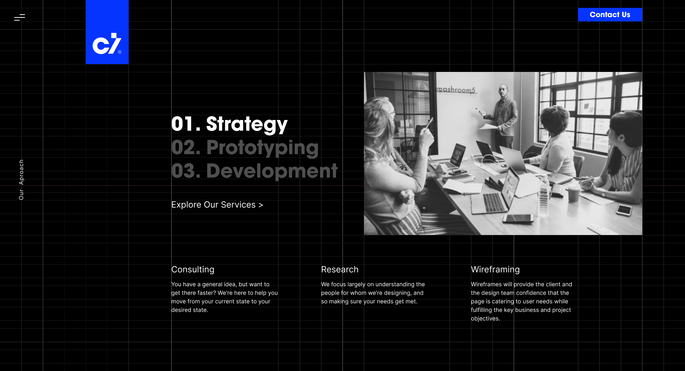
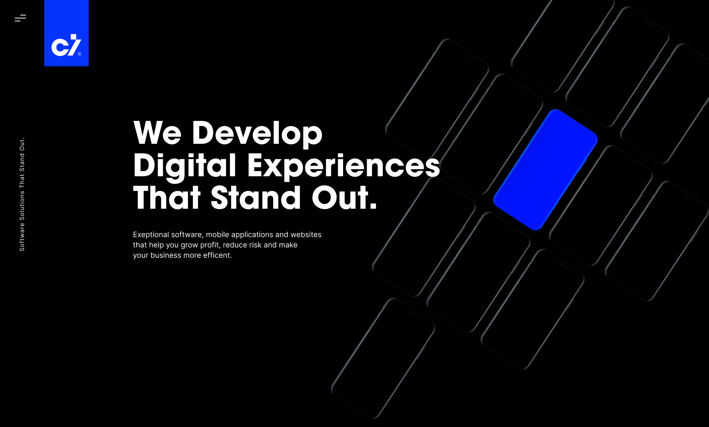
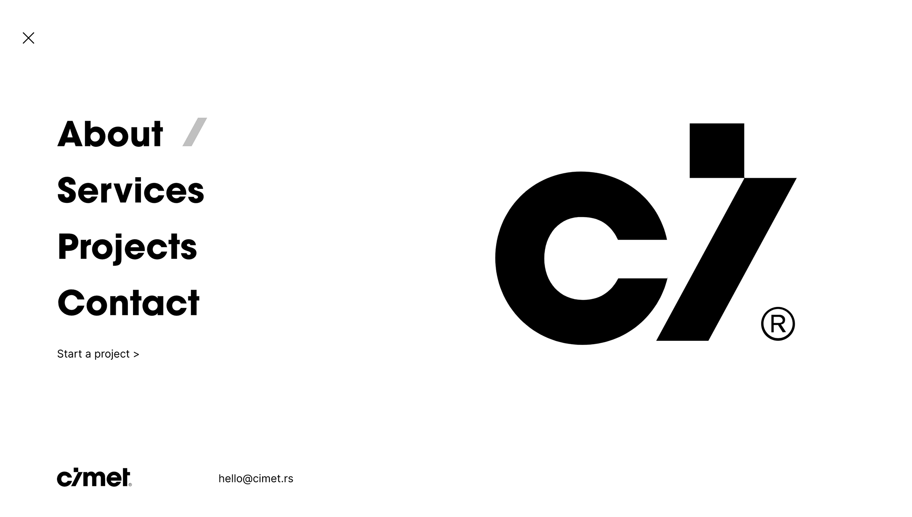
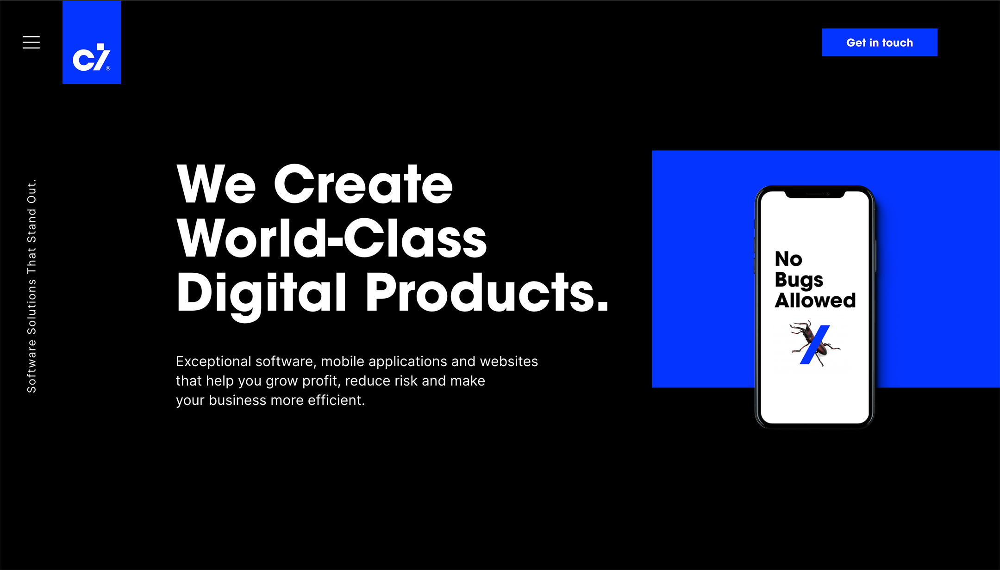
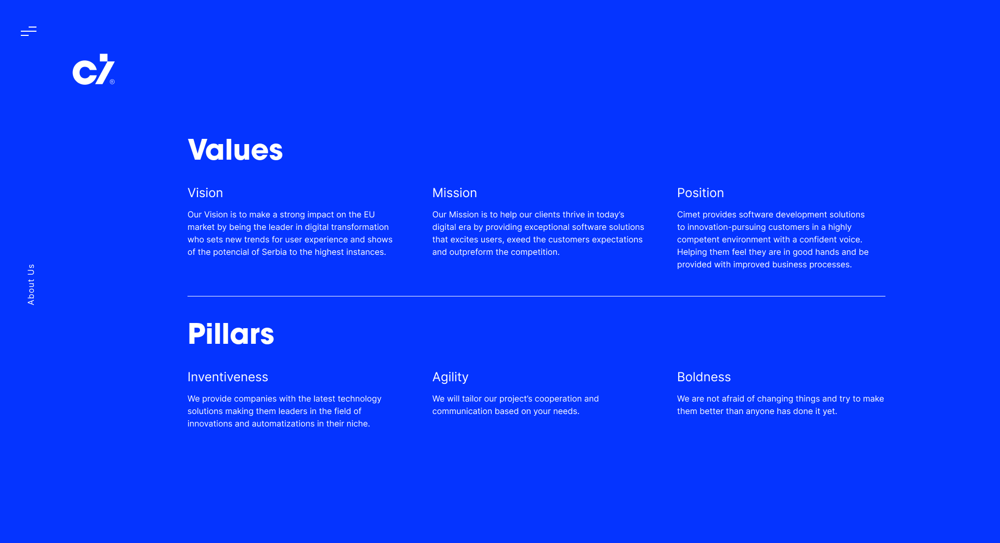
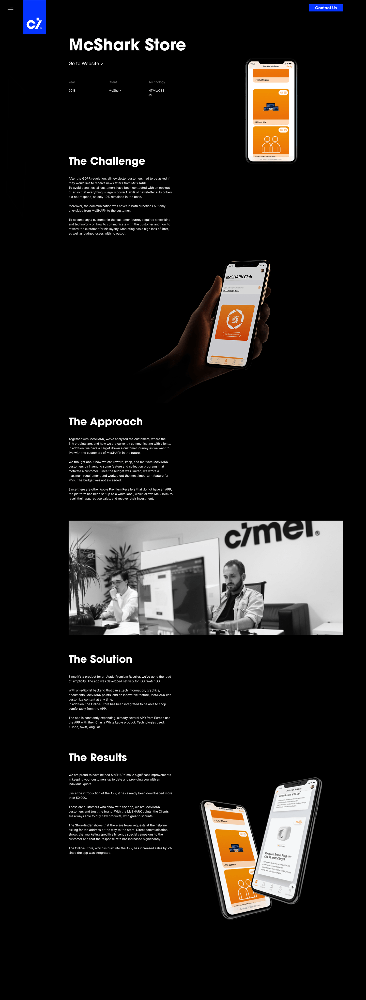

BACK
Cimet
Cimet decided to rebrand, and I helped with the design of the new website - creating the UI/UX, animations, interactions, and went through design sprints with the project manager. Then I guided the developers/designer through precise mockups with feedback and iterations.
Client: Cimet
Role: UX/UI Design
Date: 2019
FOCUS 01
Web Design
After the Art Direction was set, we began contemplating and designing the website according to concepts and references. We drew wireframes and proceeded to create pages, animations, and write the content. I also learned the basics of operating a front-end web development environment.
FOCUS 02
What's new, and is it better?
The approach towards UI was modern, mostly flat, and professional with large headers to avoid making the site too generic and plain. The old website was too complicated and the navigation was messy, so what I focused on the most was making the overall site simple with pleasant interactions. Clean layout to focus on one thing at a time, satisfying button and transition animations - over generic flat art illustrations any time.
FOCUS 03
Grid and Case Studies
I made sure we followed the grid I created, after which I started organizing case studies, making mockups and design systems for the developers to follow.





